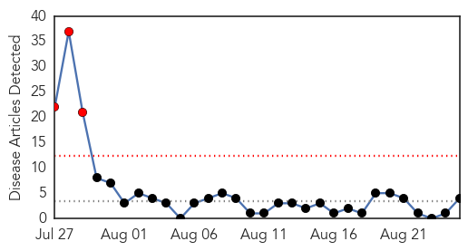
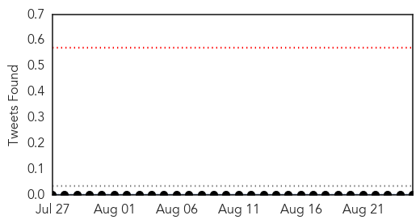
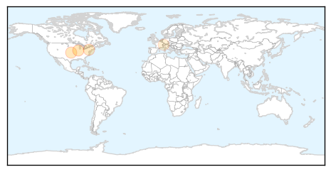

Swine Flu
30-Day Web Trend
0 alerts, 0 warnings

30-Day Twitter Trend
2 alerts, 0 warnings

Article Locations

Article Confidences
Top Articles:
Top Tweets:
-
No tweets found for Aug 25, 2015
Hepatitis
30-Day Web Trend
3 alerts, 0 warnings

30-Day Twitter Trend
0 alerts, 0 warnings

Article Locations
Article Confidences
Top Articles:
- 0.818
- White House Is Pressed to Help Widen Access to Hepatitis C Drugs via Medicaid
- 0.768
- Hepatitis C finally given approval in United Kingdom after 'inexcusable wait'
- 0.713
- Hepatitis C Is Common in Prisons, but Treatment Is Rare
- 0.520
- FDA expands use of Novartis drug Promacta® to include treatment of children ages 1 and older with chronic immune thrombocytopenia
Top Tweets:
-
No tweets found for Aug 25, 2015